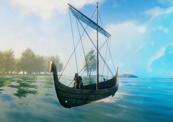
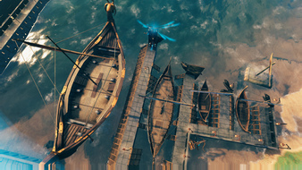

船只
本站支持中英文站内搜索。带 ↗ 的链接指向外部网站；各页来源版本见页脚。




目前有四种航海船只：木筏、维京船、维京长船和灰烬长船。每种通常都比上一种更快，并具有更高耐久、储物空间和乘客座位。唯一例外是龙船，它比长船慢。
怎么开船?
登船并与船舵互动，即可开始航行。
顺风航行
风速和风向对航行影响很大。通常逆风，即朝风吹来的方向航行，速度很慢；顺风，即朝风吹去的方向航行，会快得多。
右上角小地图显示相对船只的风向，用吹风图标表示，陆地上则为白箭头。图标白色表示风向有利；若风从船头吹来、图标变灰，该方向无法用帆，必须划桨，详见下文。帆会自动转向迎风。圆圈金色部分的亮度表示风对船的推力，但多数垂直力会被阻尼抵消。从侧风到顺风的效果大致相同，最佳角度仅快约3%。船开始移动后，玩家可离开船舵，在船上走动。
使用船舵和船帆
默认按[W]和[S]改变船只前进档位。以下按顺序列出，[W]向下切换，[S]向上切换：
- 倒退（划桨）
- 停止，与船舵互动后的初始档位。
- 前进（划桨）
- 半帆（速度受风力影响）
- 全帆（速度受风力影响）
划桨时，船舵图标会来回摆动。这种低速模式适合快速转向、精确靠岸及逆风航行。
用帆逆风航行需要之字形来回抢风，每次转向时收帆并转向迎风。直接低速划桨可能更容易、更快。
操纵船只
按[A]或[D]转动船舵。船仅在移动时会朝舵的方向转向。倒退时，舵使船转向的方向与前进时相反。
停止
按[S]或[W]，直到收起船帆、右侧划桨图标不再显示。船会在惯性耗尽后缓缓停下。若船上只有一人，松开船舵并跳下船，会立即停止船只，无论当前惯性多大。
伤害
船高速撞上生物、建筑或地形时，会造成钝击伤害。伤害随冲击速度线性变化，范围为1.5至7米/秒。船自身也受到相同伤害，但撞击玩家和鱼时忽略此机制。每0.5秒检查一次撞击。
船以较高垂直速度撞击水面时，受到10伤害。较大船只的速度阈值更高，范围为3至5米/秒。恶劣天气的大浪可能触发，但每2秒最多一次。船上没有玩家时，忽略水面伤害。
船翻覆、底部朝上时，每秒受到20伤害。大浪中可能发生，尤其是维京船。
船受到生物和玩家攻击时，按自身抗性计算伤害。所有船弱火焰，抗冰霜和穿刺，对劈砍、钝击及闪电无特殊抗性，并免疫砍伐、镐击、毒素和灵魂伤害。
船被摧毁后，会留下装有储存物品的浮箱。不过，用于造船的兽皮、钉子等较重材料会沉到海底，深水中无法取回。
比较
每种船的性能数值不同，包括被摧毁前的生命值、各种最高速度、储物空间和乘客座位数量。
| 生命值 | 储物栏位 | 额外席位 | 撞击最大伤害 | 速度（划桨） | 速度（半帆） | 速度（全帆） | |
|---|---|---|---|---|---|---|---|
| 木筏 | 300 | 0 | 0 | 20 | 1.58 m/s | 1.12–2.13 m/s | 1.59–3.02 m/s |
| 维京船 | 500 | 4 | 2 | 30 | 3.16 m/s | 2.75–5.22 m/s | 3.89–7.39 m/s |
| 维京长船 | 1000 | 18 | 4 | 50 | 3.16 m/s | 3.55–6.74 m/s | 5.02–9.54 m/s |
| 灰烬长船 | 3000 | 32 | 17 | 50 | 2.50 m/s | 3.27–6.22 m/s | 4.62–8.79 m/s |
说明
- 任何船只上都无法建造建筑。
- 由于放置错误或问题，搁浅在岩石或斜面上的船有时会滑落并撞至水底。更罕见时，船会变成无敌对象，远远滑离玩家。此问题似乎对长船的影响比另外两种更明显。
- 近岸的蜥蜴精、灰矮人、尸鬼、蚂蟥、平原牦牛或杀人蜂等敌人可能攻击船。杀人蜂尤其会攻击乘客，甚至能追随最快的船远入海中；软泥怪也能追入近海，跳上船释放毒气范围攻击。
- 处于超重时无法操作船舵，但可站在由其他玩家驾驶的船上。前两种船储物较少，此方法可能有用。
- 可在船下建造，将船抬离水面。除非水力使其碰撞地形或建筑部件，否则不会受伤。
- 只要帆已展开且甲板上至少有一名玩家，船就会继续航行，即使无人操作船舵。
- 因此，船上至少有两名玩家时，退出游戏要谨慎，因为退出后船仍会前进。重新进入时，玩家可能落在水中。
- 甲板上没有玩家时，船会立即停止。
- 因此，单人或协调一致的队伍可随时跳船或退出，无需担心船继续前进、留下玩家或撞岸，因为它会立即停止。
成就
 船长 • “掌舵航行，累计航程足以绕世界一周。”
船长 • “掌舵航行，累计航程足以绕世界一周。” 航海家 • “累计航程足以绕世界两周。”
航海家 • “累计航程足以绕世界两周。” 探索者 • “向四个方向远行。”
探索者 • “向四个方向远行。” 探路者 • “不使用地图，向四个方向远行。”
探路者 • “不使用地图，向四个方向远行。” 传说是真的 • “隐藏成就：驶出世界边缘。”
传说是真的 • “隐藏成就：驶出世界边缘。”There are currently four seafaring vessels: the Raft, the Karve, the Longship and the Drakkar. Each vessel is significantly faster than its previous version with increased durability, storage space, and player seating. The only exception is the Drakkar, which is slower than the Longship.
How to sail a boat
Climb onto the boat and interact with the rudder to begin sailing.
Sailing with the wind
Sailing is heavily affected by wind speed and direction. Generally, trying to travel upwind (i.e. in the opposite direction of the wind) will be very slow, while traveling downwind (i.e. in the same direction as the wind) will be much faster.
The mini-map on the upper right shows the direction of the wind (blowing wind symbol; white arrow if you're on land) in relation to the boat. If the symbol is white, the wind is blowing in your favour. If the wind is blowing from the bow of the boat and greyed out, you cannot use the sails in that direction and must instead use the rudder (see below). The sails automatically turn into the wind. The brightness of the golden part of the circle indicates how strong the wind is pushing the boat, however most of the vertical force is lost to dampening. All wind directions from crosswind to tailwind end up being roughly the same (with the optimal wind angle being only ~3% faster). Once the vessel is in motion, a player can leave the rudder and wander the boat.
Using the rudder and sail
Pressing [W] and [S] (default keybinds) will change the forward speed potential of the boat, toggling between the following settings, listed in order where [W] moves down the list and [S] moves up the list:
- Reverse (paddling)
- Stop (this is the starting setting when the rudder is interacted with)
- Forward (paddling)
- Half sail (speed affected by wind)
- Full sail (speed affected by wind)
When paddling, the rudder icon will move back and forth in a paddling motion. These slow speeds using the rudder are useful for turning the boat quickly, docking with precision, and travelling into the wind.
To travel into the wind with the sail, you must 'tack' back and forth in a zigzag manner, raising the sail and turning into the wind at each tack. It may be easier/faster just to rudder at a slow speed.
Steering the craft
Press [A] or [D] to turn the boat's rudder. The boat will only turn in the direction of the rudder when it is in motion. Note that if the boat is reversing, the rudder direction will turn the boat in the opposite direction than if the boat were traveling forwards.
Stopping
Press [S] or [W] until the sail is up and rudder icons on the right are no longer showing. This will result in the boat slowly coming to a stop once its current momentum is exhausted. If there is only one player on a boat, releasing the rudder and jumping off the boat will immediately stop that boat irrespective of its current momentum.
Damage
Boats deal blunt damage when ramming into creatures. structures or terrain with a high speed. The damage linearly scales with the impact speed (from 1.5 m/s to 7 m/s). Ramming also deals the same damage to the ship but is ignored against players and fish. Ramming is checked every 0.5 seconds.
Boats take 10 damage when hitting the water with a high vertical speed. The speed limit is higher for bigger ships (from 3 m/s to 5 m/s). This can happen during rough weather with high waves but can only trigger every 2 seconds. Water damage is ignored when there are no players in the ship.
Boats take 20 damage per second when capsized (upside down). This can happen during high waves especially with Karve.
Boats take damage from creature and player attacks based on their resistances. All ships are vulnerable to Fire, resistant to Frost and Pierce, neutral to Slash, Blunt, and Lightning, and immune to Chop, Pickaxe, Poison and Spirit damage.
When destroyed, ships will leave a floating crate with their stored materials, however, denser materials such as pelts and nails used to construct the boat will sink to the ocean floor and become unrecoverable in deeper waters.
Comparison
Every boat has different stats, which affect its performance. Those stats include the Health Points of the ship before it is destroyed, different (top) speeds, a differing amount of storage space and seats for other players.
| HP | Storage slots | Extra seats | Ram max damage | Speed (Paddling) | Speed (Half Sail) | Speed (Full Sail) | |
|---|---|---|---|---|---|---|---|
| Raft | 300 | 0 | 0 | 20 | 1.58 m/s | 1.12–2.13 m/s | 1.59–3.02 m/s |
| Karve | 500 | 4 | 2 | 30 | 3.16 m/s | 2.75–5.22 m/s | 3.89–7.39 m/s |
| Longship | 1000 | 18 | 4 | 50 | 3.16 m/s | 3.55–6.74 m/s | 5.02–9.54 m/s |
| Drakkar | 3000 | 32 | 17 | 50 | 2.50 m/s | 3.27–6.22 m/s | 4.62–8.79 m/s |
Notes
- You cannot build structures on any form of boat.
- Due to an error or bug in placing, sometimes a boat that has run aground on a rock or sloped surface will "slip" and crash to the bottom of the water. In some rarer cases the boat will slide away from the player and off into the distance as an invincible object. This seems to affect Longboats more than the other two variants.
- Near the shore, enemies such as Necks, Greydwarfs, Draugr, Leeches, Lox, or Deathsquitos may attack boats. Deathsquitos in particular attack passengers on boats, and are capable of following even the fastest boats far out to sea; Blobs are capable of following you a short distance out to sea and jumping into your boat to issue a poison gas AOE attack.
- While Encumbered you cannot interact with the rudder, but you may stand on a boat with another player piloting, this can be useful on the first two boats as they do not have much storage space.
- Boats can be raised out of the water by building underneath them, and will not take damage unless water forces them to collide with terrain or building parts.
- Boats will continue sailing if the sails are open and at least one player is on the deck of the boat, even if no player is interacting with the rudder.
- As such, players should be wary of logging out while having at least two players on a boat, as the boat will continue to travel while they are logged off. Logging back in may result in the player being stranded in water.
- Boats will immediately stop if there are no players on the deck of the boat.
- As such, solo players (or coordinated groups) are free to jump off/logout from the boat without fear of being left behind from their boat or their boat crashing into land, since it will stop immediately.
Achievements
The Captain • "Sail far enough to circle the world, while manning the helm."The Sailor • "Sail far enough to circle the world twice."The Explorer • "Travel far in all four directions."The Pathfinder • "Travel far in all four directions, without using a map."The Legends Are True • "Hidden achievement: Sail over the edge of the world."| Crafting |
| ||||||||||||||||||
|---|---|---|---|---|---|---|---|---|---|---|---|---|---|---|---|---|---|---|---|
| Structural |
| ||||||||||||||||||
| Light sources |
| ||||||||||||||||||
| Furniture |
| ||||||||||||||||||
| Transport |
| ||||||||||||||||||
| Defense | |||||||||||||||||||
| Siege | |||||||||||||||||||